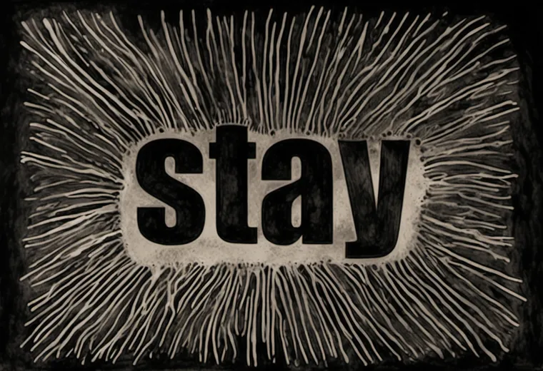

Does a mechanical font dominate the ink?
The bench already ran this experiment, by accident of its own history. On 2026-06-24 the seven voices were inked on Impact, a mechanical font, with a firm lock; that afternoon, on Loudon's art direction (commit d8ddb23b records it as "the central font was coming through too strongly"), they were inked again on Chalkduster, a hand-drawn one, with a loose lock. Both suites are in git. This piece sets them side by side.
Two fonts, one word
The same word, rasterized two ways. Impact is drawn by a machine: even strokes, straight edges, perfect counters. Chalkduster is drawn to look drawn: ragged edges, uneven weight.

Then: Impact, through the ink pass with a firm lock
Lock strength 0.85, held to the last step. The ink fills the field with a scratchboard burst, and the word sits inside it as the font, untouched: grey, straight-edged, a typeface pasted onto a drawing.

Now: Chalkduster, through the ink pass with a loose lock
Lock strength 0.5, let go at 45% of the steps. The word is redrawn in the same ink as its field: it reads as a hand.

Two things changed at once, the font and the lock, so this pair tests the gotcha's whole remedy (hand-drawn skeleton and loose canny), not the font alone. The older suite also ran NO and too late at denoise 0.78, not 0.85. The photoreal pass changed too: Impact's was locked at 0.85 to the last step (NO and BURNING to 90%), Chalkduster's at 0.8 to 85%, so the grey image each ink pass starts from differs as well. A clean split would take two more renders: Impact with the loose lock, Chalkduster with the firm one.
The test: which reads as a hand?
Pick a voice and drag the line between the two eras. For each, mark which ink reads as drawn by a hand. The measure underneath counts how much of the font's outline the ink still draws (edge in the same place, running the same way); it can't see a hand, only a trace.
| voice | outline held · then | outline held · now | chance | your eye |
|---|
The reading, after yours. Then, the ink kept 93–100% of Impact's outline in every voice: the font came through whole, which is what Loudon saw. Now it keeps 30–45% of Chalkduster's, about twice chance (16–20%): the letters were redrawn, not traced. The gotcha holds on the bench's own record. The trade is real too: the Impact suite keeps every letter in place (BURNING half-buried in drips, ASCENSION with a line of invented script above it), while the loose suite slips letters in several words (the pipeline piece walks it). A hand costs some spelling; the page's last gotcha, generate many and select, is how the bench pays.